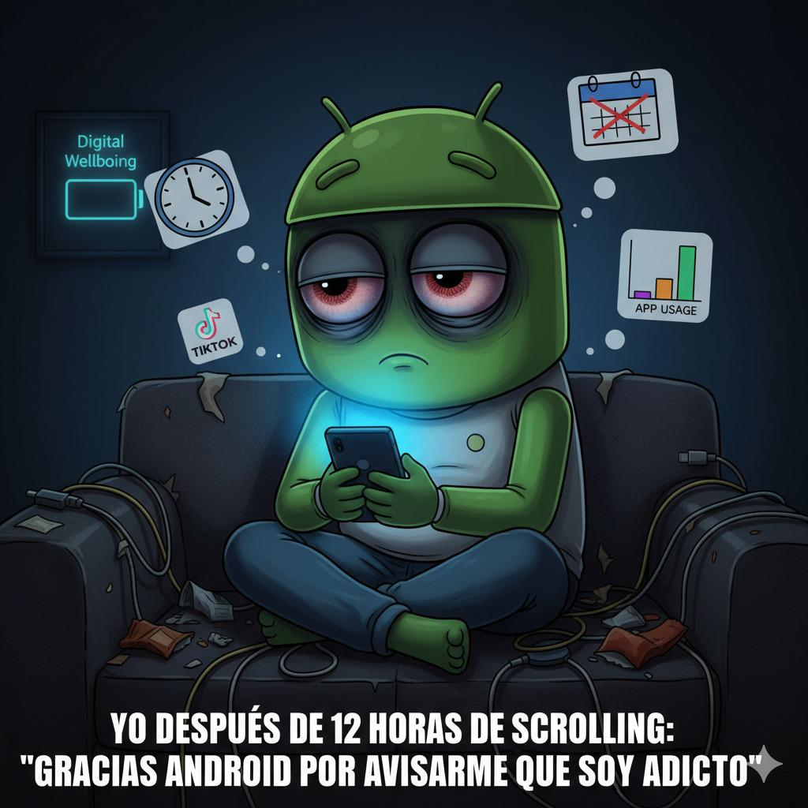
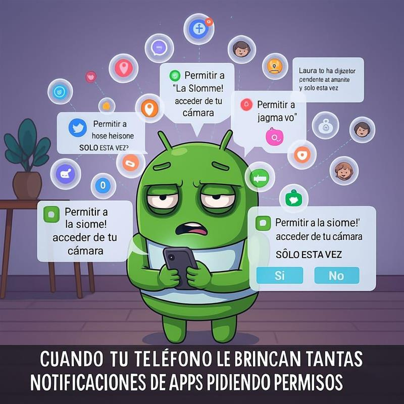
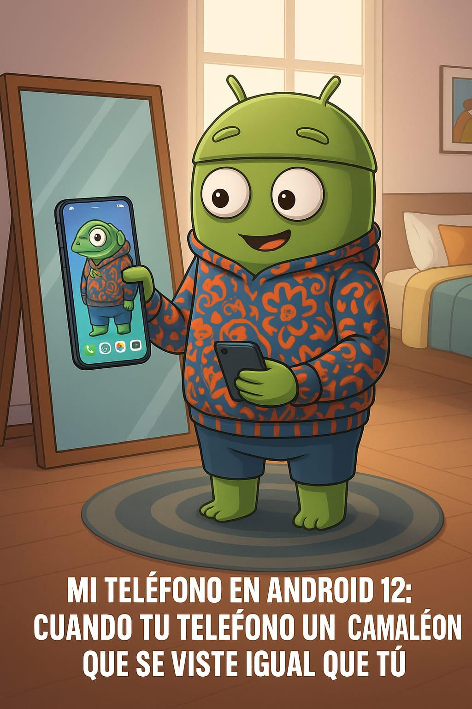
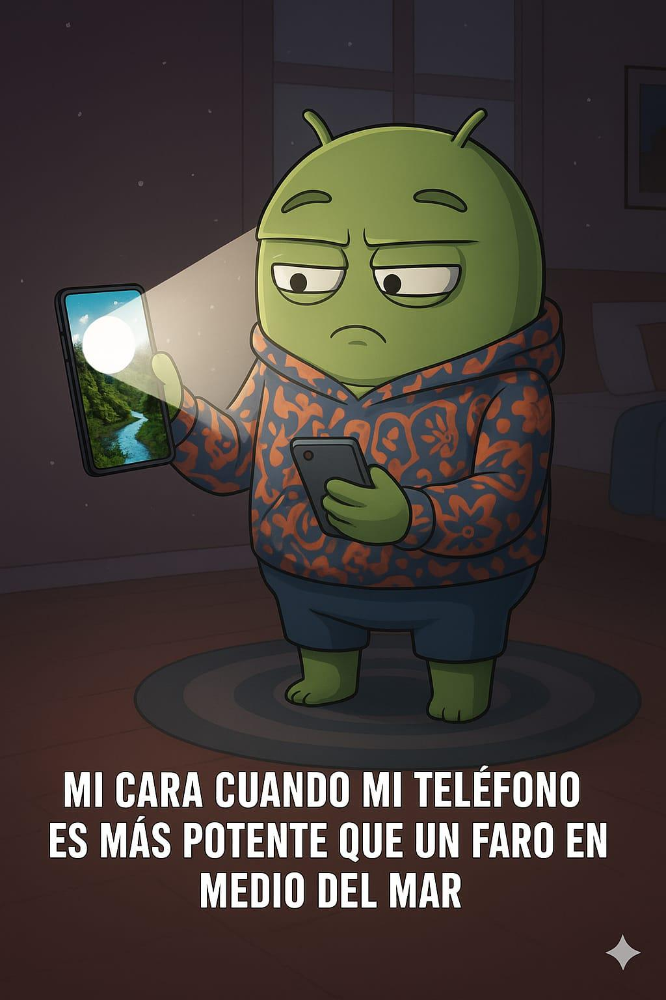

Línea de Tiempo de Android
Principales versiones y avances de Android (2018-2022)
2018
Android 9 (Pie) – API nivel 28
Año de lanzamiento: 2018
Característica estrella: Digital Wellbeing (bienestar digital) que ayudó a los usuarios a controlar su uso del teléfono, incluyendo paneles de uso de apps y modos de descanso.
¿Por qué fue un game-changer? Introdujo herramientas para promover un uso más consciente y saludable del dispositivo, algo no visto antes en Android.
Imagen

2019
Android 10 (Q) – API nivel 29
Año de lanzamiento: 2019
Característica estrella: Live Caption – subtítulos automáticos en tiempo real, incluso sin conexión.
¿Por qué fue un game-changer? Revolucionó el acceso a contenido multimedia para todos, especialmente personas con discapacidad auditiva, sin depender de Internet.
Imagen
2020
Android 11 (Red Velvet Cake) – API nivel 30
Año de lanzamiento: 2020
Característica estrella: Conversaciones destacadas y burbujas de chat en notificaciones, junto con permisos temporales y restablecimiento automático para apps inactivas.
¿Por qué fue un game-changer? Mejoró notablemente la gestión de notificaciones (conversaciones y burbujas) y elevó la privacidad con permisos más granulares y automáticos.
Imagen

2021
Android 12 (Snow Cone) – API nivel 31
Año de lanzamiento: 2021 (según su popularización; aunque no estaba en fuentes, se sabe).
Característica estrella: Material You (temas dinámicos, widgets más personalizados) y nuevas APIs como Game Mode, inserción rica de contenido y controles de privacidad visuales (indicadores de cámara/micrófono, accesos rápidos).
¿Por qué fue un game-changer? Ofreció una experiencia visual más personalizada (Material You) y herramientas de desarrollador para optimizar rendimiento en juegos, todo mientras reforzaba privacidad.
Imagen

2022
Android 12L (Snow Cone v2) – API nivel 32
Año de lanzamiento:2022
Característica estrella: Interfaz optimizada para tablets y dispositivos plegables, con mejoras en multitarea y una nueva barra de tareas para cambiar entre aplicaciones fácilmente.
¿Por qué fue un game-changer? Permitió que Android escalara mejor en pantallas grandes, ofreciendo soporte oficial a plegables y mejorando la experiencia en tablets, un sector históricamente descuidado en el ecosistema Android.
Android 13 (Tiramisu) – API nivel 33
Año de lanzamiento: 2022
Característica estrella: API de conversión de texto para idiomas fonéticos y mejoras en scripts no latinos (line heights adaptados), además de control de brillo de linterna, efectos cinematográficos de fondo (“3D wallpapers”) y optimización de lanzamiento de juegos.
¿Por qué fue un game-changer? Amplió la accesibilidad lingüística para idiomas complejos, mejoró la estética visual y apoyó mejor al sector gaming con rendimiento dinámico.
Imagen
